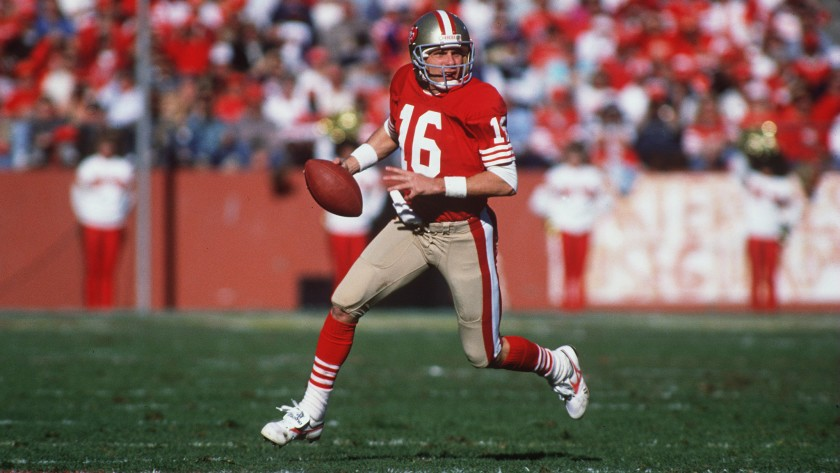

Joe Montana rolling out to make a pass.
Joe Montana
- 1974 - under Notre Dame policy in 1974 freshmen were not permitted to practice with or play on the varsity team, and consequently Montana appeared only in a few freshman team games
- 1978 - As a fifth-year senior in 1978, Montana helped Notre Dame to a come-from-behind win against the Pitt Panthers, and almost pulled off a second one against USC, Notre Dame's primary rival
- 1981 - Montana began the 1981 season as San Francisco's starting quarterback. The season ended up as one of the franchise's most successful to that point. Backed in part by Montana's strong performance, the team finished the regular season with a 13–3 record